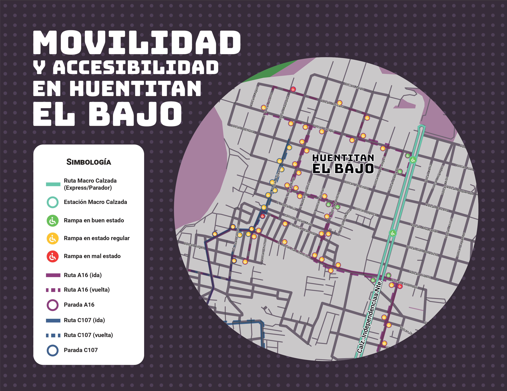

Escucha Activa

Una herramienta de consulta para visualizar y comprender las condiciones de accesibilidad en la Zona Metropolitana de Guadalajara.
La accesibilidad no es una mejora técnica; es el derecho a la ciudad recuperado para quienes han sido invisibilizados.
Explorar Mapa
Puntos Evaluados
Accesibles
Parcialmente Accesibles
Críticos
Los puntos críticos fueron identificados mediante observación en campo, revisión de infraestructura urbana y validación mediante fuentes técnicas y reportes ciudadanos.
La clasificación considera criterios relacionados con accesibilidad universal, movilidad peatonal, acceso al transporte público e infraestructura urbana.